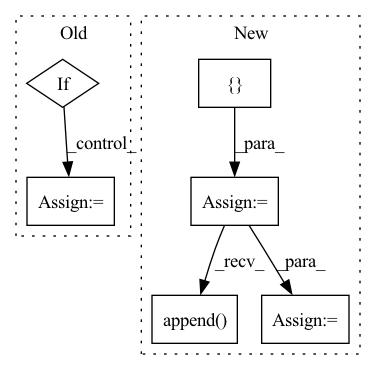

Pattern ID :1483
Before Change
assert not (nearest_neighbor_upsample and bilinear_upsample)
if bilinear_upsample:
upsample_klass = partial(InterpolateUpsample, mode = "bilinear")
elif nearest_neighbor_upsample:
upsample_klass = partial(InterpolateUpsample, mode = "nearest")
else:
upsample_klass = Upsample
// upsampling layers
After Change
// downsampling layers
skip_connect_dims = [] // keep track of skip connection dimensions
for ind, ((dim_in, dim_out), layer_num_resnet_blocks, groups, layer_attn, layer_cross_attn) in enumerate(zip(in_out, *layer_params)):
is_last = ind >= (num_resolutions - 1)
layer_use_linear_cross_attn = not layer_cross_attn and use_linear_cross_attn
layer_cond_dim = cond_dim if layer_cross_attn or layer_use_linear_cross_attn else None
transformer_block_klass = TransformerBlock if layer_attn else (LinearAttentionTransformerBlock if use_linear_attn else nn.Identity)
current_dim = dim_in
// whether to pre-downsample, from memory efficient unet
pre_downsample = None
if memory_efficient:
pre_downsample = downsample_klass(dim_in, dim_out)
current_dim = dim_out
skip_connect_dims.append( current_dim)
self.downs.append(nn.ModuleList([
pre_downsample,
ResnetBlock(current_dim, current_dim, cond_dim = layer_cond_dim, linear_attn = layer_use_linear_cross_attn, time_cond_dim = time_cond_dim, groups = groups),
nn.ModuleList([ResnetBlock(current_dim, current_dim, time_cond_dim = time_cond_dim, groups = groups, use_gca = use_global_context_attn) for _ in range(layer_num_resnet_blocks)]),
transformer_block_klass(dim = current_dim, heads = attn_heads, dim_head = attn_dim_head, ff_mult = ff_mult),
downsample_klass(current_dim, dim_out) if not memory_efficient and not is_last else None,
]))
// middle layers
mid_dim = dims[-1]
self.mid_block1 = ResnetBlock(mid_dim, mid_dim, cond_dim = cond_dim, time_cond_dim = time_cond_dim, groups = resnet_groups[-1])
self.mid_attn = EinopsToAndFrom("b c h w", "b (h w) c", Residual(Attention(mid_dim, **attn_kwargs))) if attend_at_middle else None
self.mid_block2 = ResnetBlock(mid_dim, mid_dim, cond_dim = cond_dim, time_cond_dim = time_cond_dim, groups = resnet_groups[-1])
// upsampling layers
for ind, ((dim_in, dim_out), layer_num_resnet_blocks, groups, layer_attn, layer_cross_attn) in enumerate(zip(reversed(in_out), *reversed_layer_params)):
is_last = ind == (len(in_out) - 1)
layer_use_linear_cross_attn = not layer_cross_attn and use_linear_cross_attn
layer_cond_dim = cond_dim if layer_cross_attn or layer_use_linear_cross_attn else None
transformer_block_klass = TransformerBlock if layer_attn else (LinearAttentionTransformerBlock if use_linear_attn else nn.Identity)
skip_connect_dim = skip_connect_dims.pop()
self.ups.append(nn.ModuleList([
ResnetBlock(dim_out + skip_connect_dim, dim_out, cond_dim = layer_cond_dim, linear_attn = layer_use_linear_cross_attn, time_cond_dim = time_cond_dim, groups = groups),In pattern: SUPERPATTERN
Frequency: 3
Non-data size: 6
Instances Fragment ID: 4176718
Project Name: lucidrains/imagen-pytorch
Commit Name: 36bdefca0e8670ca42b39236315121b703b9533f
Time: 2022-06-27
Author: lucidrains@gmail.com
File Name: imagen_pytorch/imagen_pytorch.py
M Class Name: Unet
N Class Name: Unet
M Method Name: __init__(1)
N Method Name: __init__(1)
M Parent Class: nn.Module
N Parent Class: nn.Module
M File Name: imagen_pytorch/imagen_pytorch.py
N File Name: imagen_pytorch/imagen_pytorch.py
M Start Line: 1178
M End Line: 1250
N Start Line: 1148
N End Line: 1221
Before Change
raise TypeError("Unknown Type:\t{}".format(norm))
self.norm0 = norm(out_channels)
if self.concat:
if self.mode == "res_mask":
k= 2*out_channels + 1
else:
k = 2*out_channels
self.conv1 = conv3x3(k, out_channels)
self.norm1 = norm(out_channels)
else:
self.conv1 = conv3x3(out_channels, out_channels)After Change
// residual structure
self.conv2 = []
self.conv3 = []
for i in range(blocks):
self.conv2.append(
nn.Sequential(*[
nn.Conv2d(out_channels // 2 + 1, out_channels // 4, 5, 1, 2),
nn.ReLU(True),
nn.Conv2d(out_channels // 4, 1, 5, 1, 2),
nn.Sigmoid()
])
)
self.conv3.append( conv3x3(out_channels // 2, out_channels))
self.bn = []
for _ in range(blocks):
self.bn.append(norm(out_channels))
self.bn = nn.ModuleList(self.bn)
self.conv2 = nn.ModuleList(self.conv2)
self.conv3 = nn.ModuleList(self.conv3)
self.act = act
def forward(self, from_up, from_down, mask=None): Fragment ID: 4176684
Project Name: bcmi/slbr-visible-watermark-removal
Commit Name: 43e84b70895d28955496122816e50857863e5bfd
Time: 2022-01-04
Author: lj200820082007@163.com
File Name: src/networks/blocks.py
M Class Name: MBEBlock
N Class Name: MBEBlock
M Method Name: __init__(10)
N Method Name: __init__(10)
M Parent Class: nn.Module
N Parent Class: nn.Module
M File Name: src/networks/blocks.py
N File Name: src/networks/blocks.py
M Start Line: 208
M End Line: 235
N Start Line: 208
N End Line: 248
Before Change
self.mlp = GPT2MLP(inner_dim, config)
adapter_dict = {}
if self.use_adapters:
for key, value in self.domain_dict:
adapter_dict[key] = Adapter(config)
self.adapter_dict = adapter_dict
// self.domain_dict = config.domain_dictAfter Change
self.mlp = GPT2MLP(inner_dim, config)
self.domain_dict = config.domain_dict
adapter_list = []
if self.use_adapters:
for _ in self.domain_dict.keys():
adapter_list.append( Adapter(config))
self.adapter_module = nn.ModuleList(adapter_list)
logger.info(f"I was given a tree with {len(self.domain_dict.keys())} nodes and I initialized {len(adapter_list)} adapters!")
Fragment ID: 4176708
Project Name: alexandra-chron/hierarchical-domain-adaptation
Commit Name: d7af68e8dab4cedbe21346e2bf8ef39853a6194f
Time: 2021-07-29
Author: alexandra.xron@gmail.com
File Name: models/modeling_gpt2.py
M Class Name: GPT2Block
N Class Name: GPT2Block
M Method Name: __init__(2)
N Method Name: __init__(2)
M Parent Class: nn.Module
N Parent Class: nn.Module
M File Name: models/modeling_gpt2.py
N File Name: models/modeling_gpt2.py
M Start Line: 325
M End Line: 338
N Start Line: 324
N End Line: 340